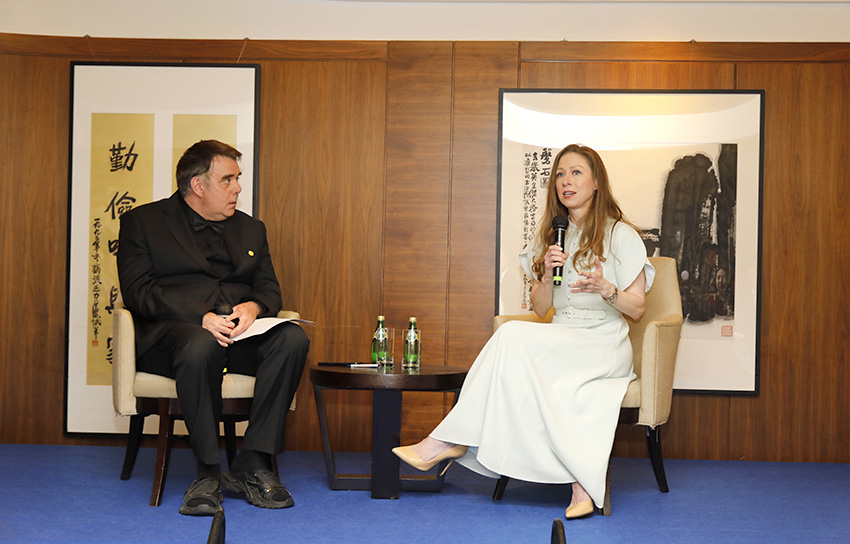

June 2, 2026
APEC
4th APEC Silicon Valley Summit Concludes in Hong Kong, Empowering Asia-Pacific Collaboration
Co-hosted by the Bay Area Council and MEBO International, the 'Silicon Valley Meets APEC: Bay to Bay' forum in Hong Kong brought together business, technology, and policy leaders — alongside a CGI-MEBO healthcare innovation dinner attended by Chelsea Clinton.
Read Story